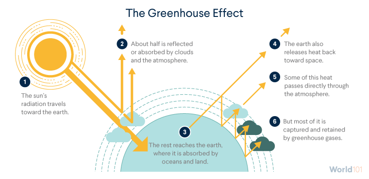

Geografi
global warming
.jpeg)

Global warming atau pemanasan global merupakan masalah paling besar yang dihadapi oleh kaum manusia di masa modern ini. Global warming adalah proses peningkatan shu rata-rata pada atmosfer, laut, dan daratan di seluruh dunia. Selama 100 tahun terakhir, suhu rata-rata global pada permukaan Bumi telah meningkat 0.7 ± 0.18 °C 4(1.33 ± 0.32 °F).
Sebagian besar kenaikan suhu yang terjadi sejak abad ke-20 disebabkan oleh emisi gas-gas rumah kaca akibat aktivitas manusia yang semakin meningkat. Hal ini menyebabkan kenaikan intensitas efek rumah kaca dengan sangat drastis.
Efek rumah kaca (Greenhouse Effect) adalah fenomena alam dimana radiasi panas matahari yang dipancarkan ke permukaan Bumi diperangkap dan juga dipantulkan oleh gas-gas rumah kaca. Beberapa gas-gas rumah kaca yang berpern dalam intensifikasi efek rumah kaca diantaranya, karbon dioksida (CO2), karbon monoksida (CO), metana (CH4), belerang dioksida (SO2), nitrogen monoksida (NO), nitogen dioksida (NO2), dan klorofluorocarbon (CFC).
Gas-gas rumah kaca tersebut yang terlepas ke atmosfer merupakan hasil dari aktivitas manusia yang semakin meningkat seiring dengan meningkatnya populasi manusia dan juga kemajuan tekonologi. Faktor utama penghasilan gas-gas rumah kaca adalah pembakaran bahan bakar fosil untuk memenuhi kebutuhan manusia. Misalnya untuk transportasi menggunakan kendaraan bermotor, untuk pembangkit listrik, bahan bakar fosil juga merupakan sumber energi utama di bidang industri.
Maka dari itu, kita harus mulai lebih peduli dengan Bumi kita tercinta ini. Beberapa langkahnya adalah menghemat energi seperti mematikan alat-alat listrik yang tidak terpakai, mengurangi penggunaan kendaraan bermotor, mendaur ulang sampah, melestarikan lingkungan seperti menanam tanaman, dan masih banyak lagi.
aksi nyata

Bervegetarian dan menggunakan tumbler.
Menyiram tanaman.
Mendaur ulang sampah.
Hemat energi.